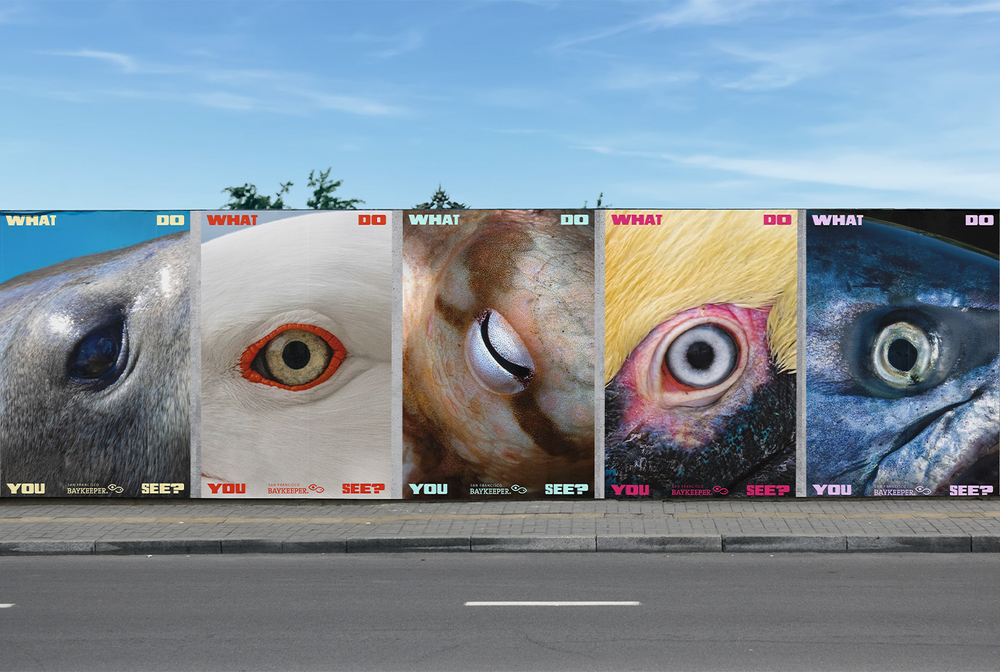
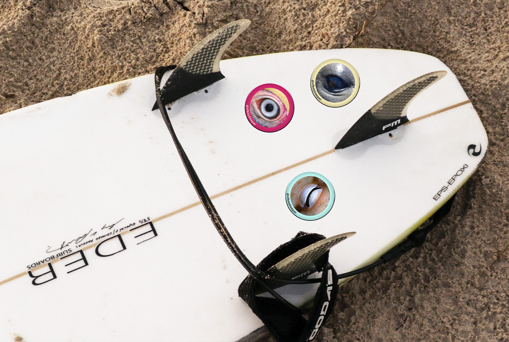
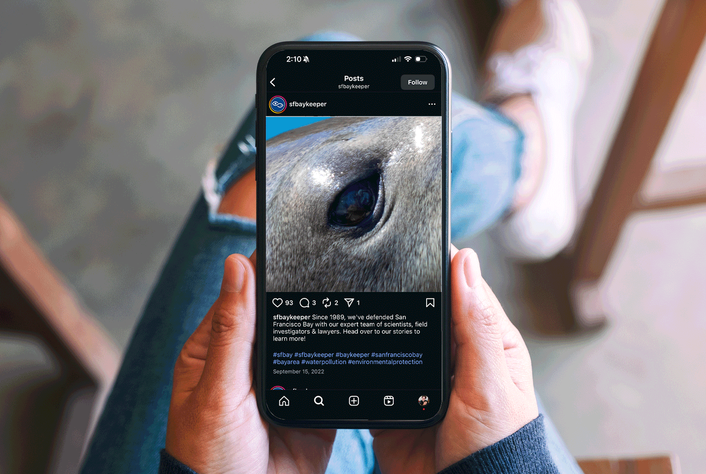
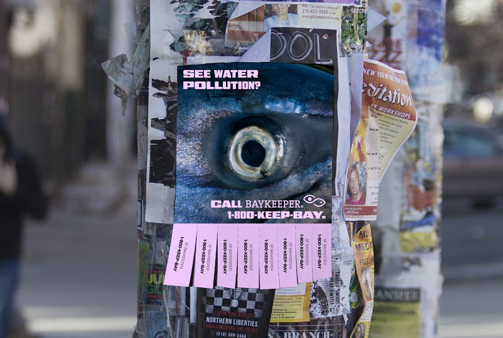
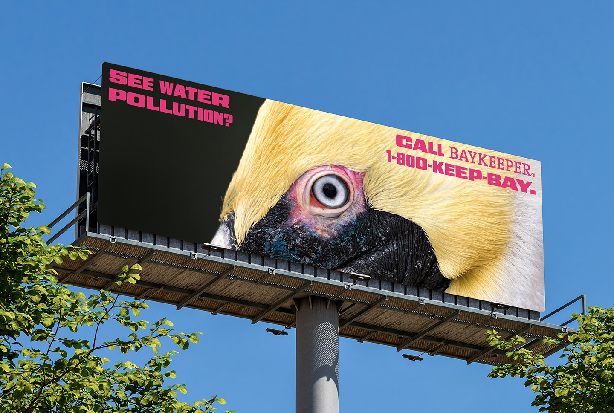
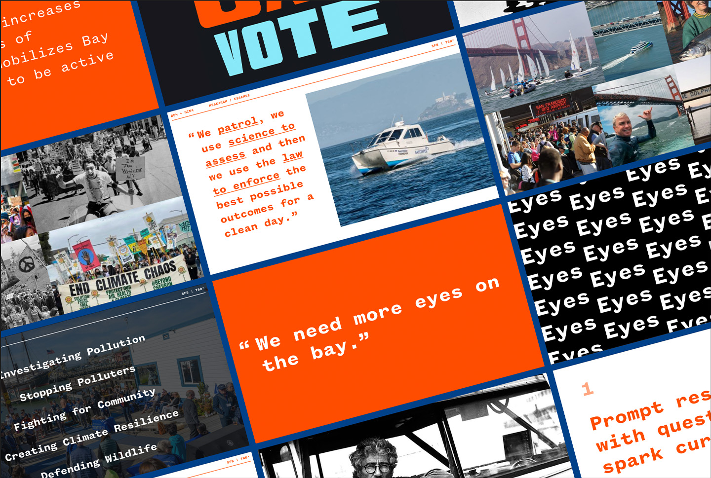
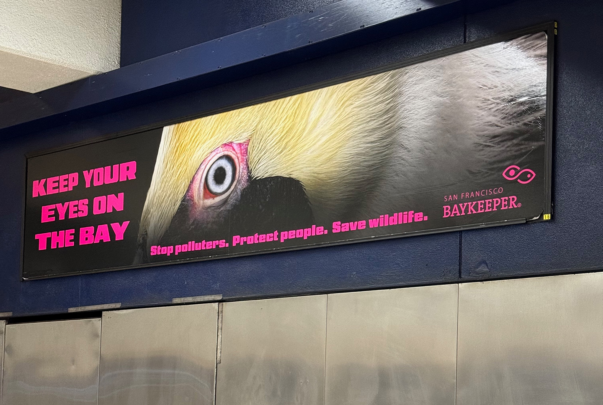
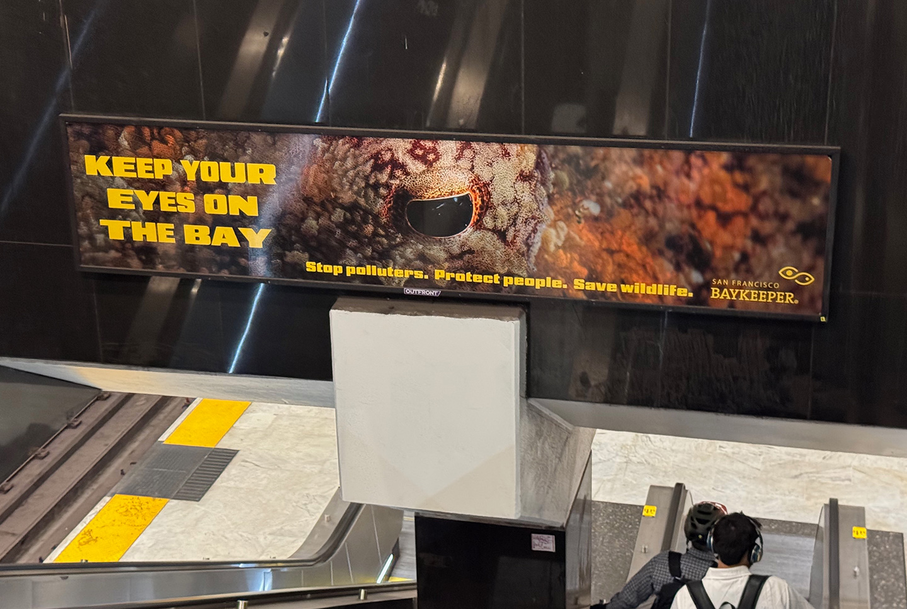

San Francisco Baykeeper
Campaign
Design Lead:
Ben Cardoza
Designers:
Ben Cardoza, Nina Mayne
Client:
San Francisco Baykeeper

San Francisco Baykeeper is an environmental nonprofit dedicated to protecting and restoring the San Francisco Bay and its surrounding ecosystems. Their work focuses on investigating pollution, holding polluters accountable, defending wildlife, creating climate resilience, and fighting for the health of Bay Area communities. Through a cycle of patrol, scientific assessment, and legal enforcement, Baykeeper acts as a watchdog for the Bay, ensuring that corporations and institutions are held responsible for environmental harm. While their work is critical to the area, many Bay Area residents are unaware of Baykeeper’s role or how they can support it.
We developed an awareness campaign for Baykeeper aimed at bridging the gap between shared environmental values and direct action. The campaign’s goal was to increase awareness of Baykeeper’s work while mobilizing residents to become active supporters and reinforcing a sense of collective responsibility for the Bay. We grounded the campaign in the Bay Area’s long history of environmental and social activism, creating a visual system that feels serious, accessible, and action-driven.
Through exploration, we arrived at the idea that we need “More Eyes on the Bay,” using the eyes of local Bay Area animals affected by pollution as a powerful visual metaphor. The eyes see the corporations who pollute the Bay and the negative impacts it is having on the local ecosystem. They also see the residents of the Bay because they can make a difference by showing their support for Baykeeper. The more eyes on the Bay, the more people there are to put pressure on polluters and hold corporations accountable. The language for the campaign proposes a question to the viewer, provides an answer that states the issues in the Bay, and gives them a direct call to action. The system extends across wheat paste posters, stickers, pins, social media posts, tear-away flyers, and billboards, allowing the message to live both physically and digitally throughout the city. Ultimately, the campaign is designed as a flexible system that can adapt across platforms, as well as serve as a powerful reminder that Baykeeper is watching, and that we should be watching too.
“We work with consultants all the time, and we’ve been very underwhelmed. From the very first meeting they impressed me. They had done a lot of research and picked up on all of these quotes and they really understand baykeeper. They really understood what we stood for from the outside, something consultants had failed to do.” —Sejal Choksi-Chugh, Executive Director, San Francsico Baykeeper








